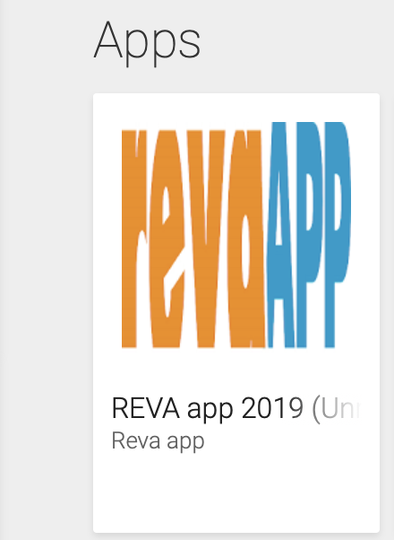
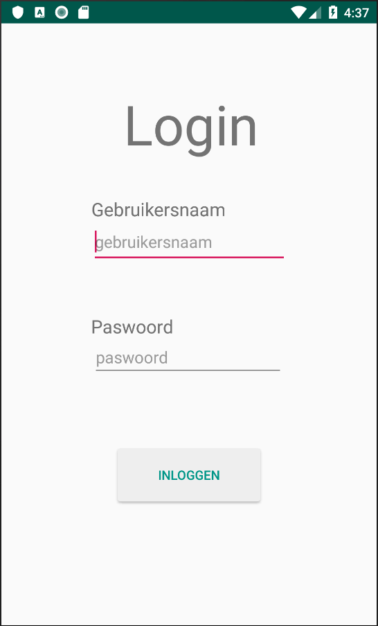
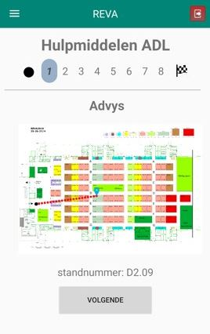
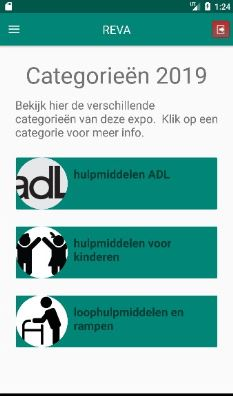
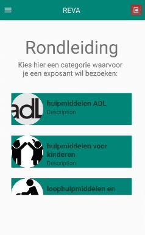
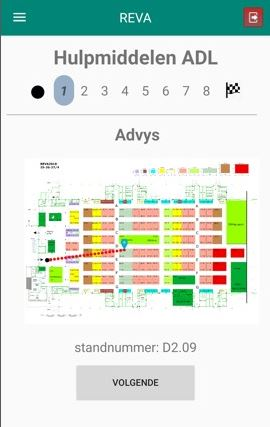
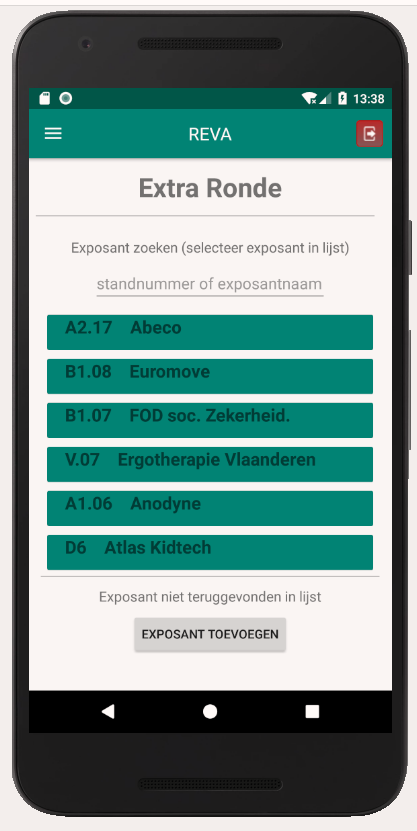

-

Hoe download je de app
Je kan de app in de Google Play Store terugvinden (en downloaden) onder de naam 'REVA app 2019'.
-

Inloggen in android app
Je kan op 2 manieren inloggen op de app:
- De leerlingen krijgen de login gegevens van de school (leerkracht kan dit terugvinden op het webplatform, onder 'Groepen'). Hierbij zullen de leerlingen eerst zelf groepjes (max 4) moeten aanmaken in de app.
- Als de leerkracht in het webplatform de groepjes heeft aangemaakt dan kunnen leerlingen inloggen op de app met de login gegevens van de groep, die via de leerkracht verkregen worden.
-

Startscherm
Hiernaast ziet u het startscherm. Hier vindt u een uitleg over wat de app inhoudt. Linksboven ziet u het "hamburgermenu" met volgende opties: Home, Beursplan, Categorieën en Groepsleden. Wanneer de rondleiding kan beginnen (als de beurs start) zal er een knop "rondleiding starten" tevoorschijn komen. Door op deze knop te duwen zal de rondleiding starten.
-

Beursplan
Klikken we bij het hamburgermenu op beursplan, dan krijgen we een plan van de beurs te zien waarop ook de standplaatsen van de exposanten terug te vinden zijn. Men kan dit tijdens de rondleiding gebruiken om exposanten terug te vinden. Deze standplaatsen komen overeen met diegene die je toegewezen krijgt bij een opdracht in de app, als men een rondleiding start.
-

Categorieën
Bij het klikken op categoriëen in het hamburgermenu komt er een scherm tevoorschijn (links), met alle mogelijke categorieën waaruit een groep kan kiezen. Er is een detailscherm als men op een specifieke categorie klikt, waardoor we een groep van informatie voorzien om een doorslaggevende keuze te kunnen maken.
-

Rondleiding is gestart,
tijd voor een keuzeAls de groep de rondleiding start krijgen ze een overzicht (zichtbaar in de afbeelding) van alle categoriëen te zien. Eens een categorie gekozen zal er een opdracht aangemaakt worden die de groep zal moeten indienen.
-

Exposant bezoeken &
opdracht indienenHeeft men een categorie gekozen, dan krijgen we een nieuw scherm te zien met op het beursplan een route naar de positie van de te bezoeken exposant. Eens de groep zich bij de exposant bevindt, klikt men op 'volgende' om zo doorverwezen te worden naar het volgende scherm, waarop een opdracht zal ingevuld moeten worden. Hier zal er een vraag beantwoord of een foto gemaakt moeten worden. Bij de laatste vraag komt u terecht op het eindscherm. Dit betekent dat u uw rondleiding succesvol heeft beeïndigd. Hier krijgt de groep de optie op de applicatie te stoppen of om nog een extra ronde te doorlopen van de rondleiding.
-

Extra ronde
In deze extra ronde kan de groep nog een opdracht maken door: op een categorie te kiezen, of door een specifieke exposant aan te klikken. Er is een mogelijkheid om zelf een exposant toe te voegen die een groep interessant vindt, als deze niet werd teruggevonden in de lijs. We hebben er voor gezorgd dat een groep nooit twee maal dezelfde opdracht krijgt, waardoor ze dus verschillende exposanten zullen bezoeken. Deze extra rondes kunnen blijven uitgevoerd worden, tot alle opdrachten gemaakt zijn.